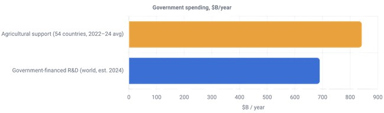
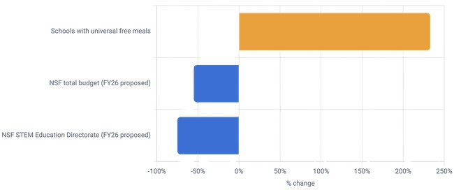
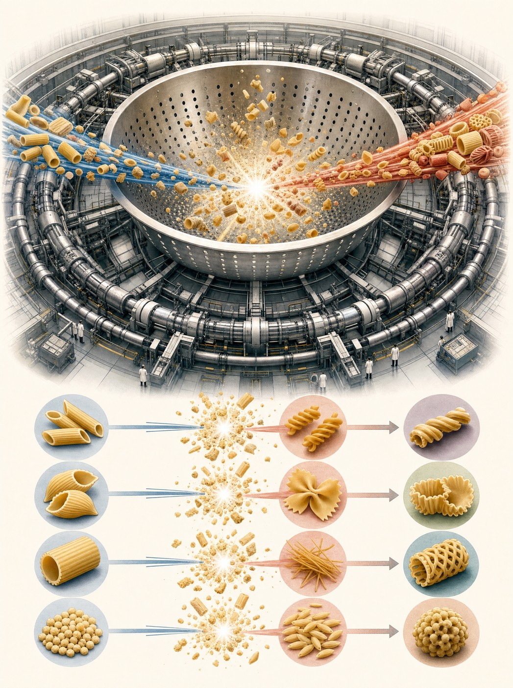

MOOWS / Issue 01 · August 2026
The Large Hadron Colander
With the popularity of pasta steadily growing and with science budgets steadily declining, scientists in the UN department of population control and agricultural domination came up with a new brazen plan: build a Pasta Hadron Colander. Speaking with head pastaentist Alvin Alessio Pastarius (he assured us the name was accidental) we dive deeper into what's happening and why. The team here hopes this will bring more of the non-believing masses closer to the faith of science and away from notions that our life is governed by jews and emotions.
Alvin Alessio exclaims "It's past time we get our shit together and run fake news through the colander of reality", when we asked if he had any plans for this evening.
He was probably upset because in the last few years he has seen his funding steadily go down while pasta is becoming both more abundant and more expensive.

As the spending trends continue supporting agriculture over science, the same trends can be seen in schools where children are now feeding on wheat instead of being fed scientific knowledge.
While some argue that hungry kids cannot learn science, many scientists argue that feeding the soul can only be achieved by STEM teachers and not by stems of plants.

The history
This might come as a surprise to most readers but pasta has been leading the way for scientific discovery for thousands of years. It's pasta that was one of the main pillars supporting the Roman empire, as the saying goes, all roads lead to Rome and all roads are paved with pasta. Pasta was the secret ingredient in most roman baths and architecture.
Ancient roman architects used to grind pasta and add in a ratio of 1:200000 into marble. The original homeopathic concepts of "too small to notice, too well marketed to ignore" was first practiced by Marcus Vitruvius Pollio, author of De Architectura. Marcus Aurelius instructed his soldiers to tip their spears in Putanesca sauce in order to convert defending armies to the roman cause at best best case and, should they accidentally die by spear, they will become zombies fighting for the Roman empire on the planes of tartarus.
The promise
We walk into the SERN institute (Sémolina Européenne Recherche Nouilles) with our guide Alvin Alessio and the first thing you notice is the smell of fresh pasta filling the air. “You can imagine how children feel when they walk into this hall for the first time and we tell them this is the smell of science!” he tells me. He too probably understands that smashing different pieces of pasta together close to the speed of light is probably not going to stop global warming but the hope in his voice is palpable.
He takes us to the room where the real work happens and before explaining anything points at a life size poster of Homer Simpson on the wall wearing a shirt with a baguette and the word “Dough!” written underneath. “it’s meta” he tells me, and continues guiding us to the control panel where an experiment is about to take place.
I was lucky enough to see 5 types of pasta get smashed together that day. At one point there was a commotion in the control room because the measurements showed that perhaps a new type of pasta might have been created from the particles of a Macaroni and a Penne (attempting to liven up the most boring of pastas perhaps) but it turned out to be a weasel munching on some cabling messing up the equipment.
Am I more hopeful after my experience? No. More hungry? Slightly, but maybe that’s what life is all about.
